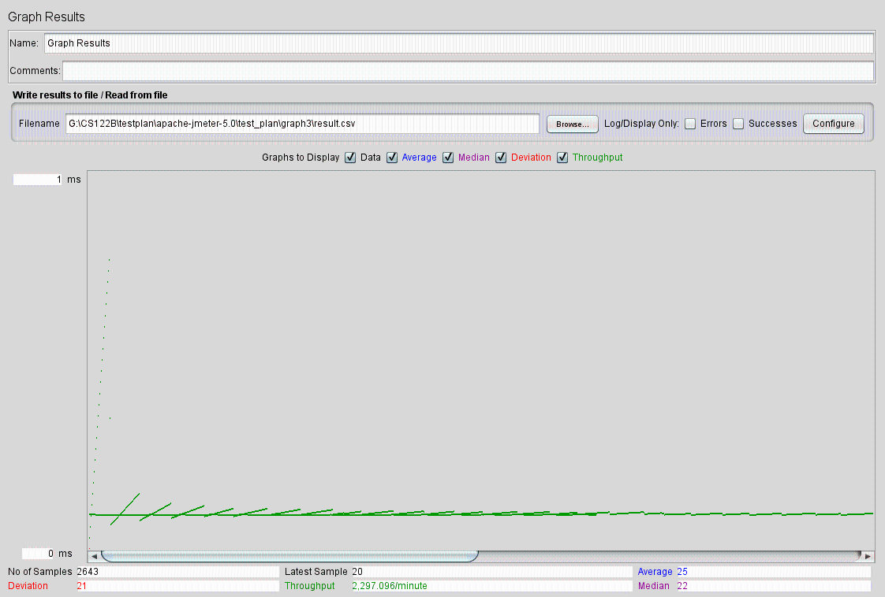
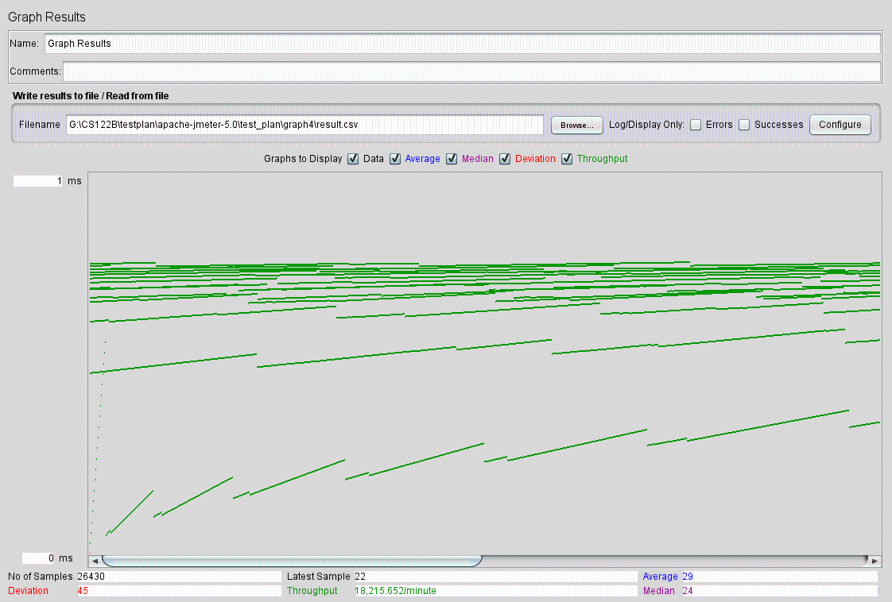
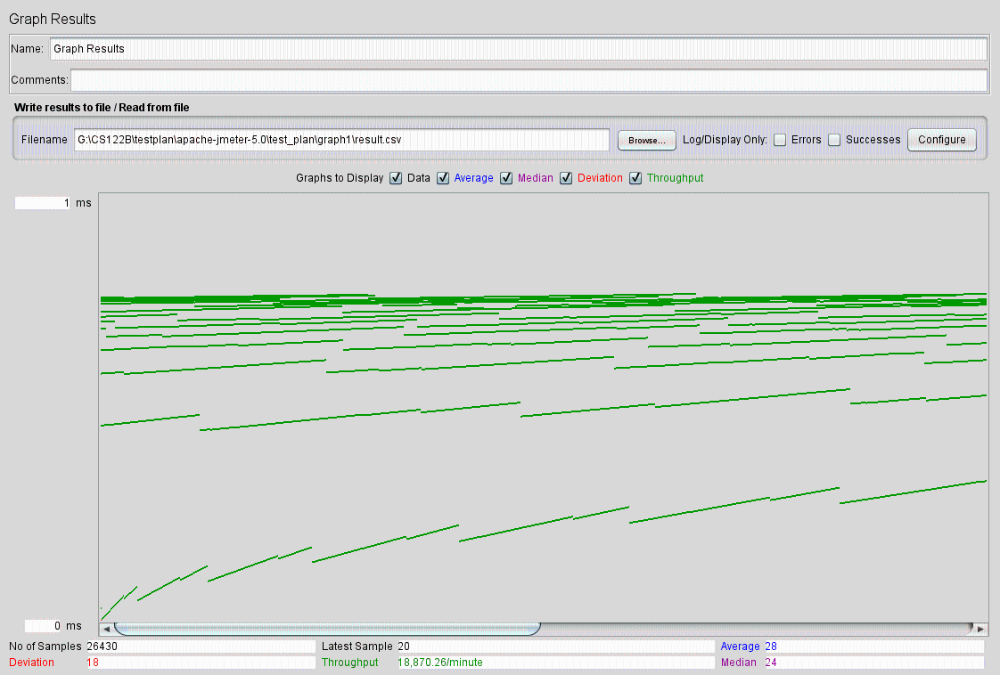
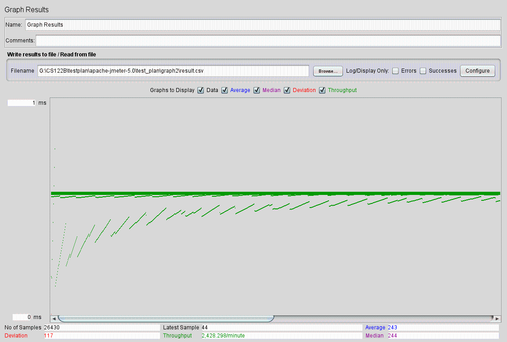
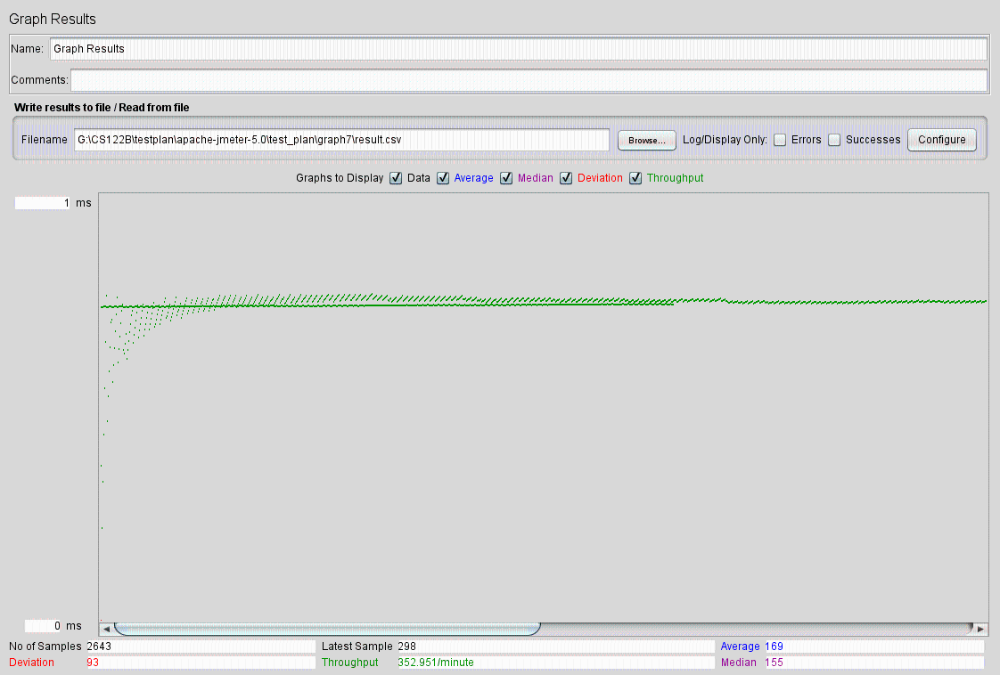
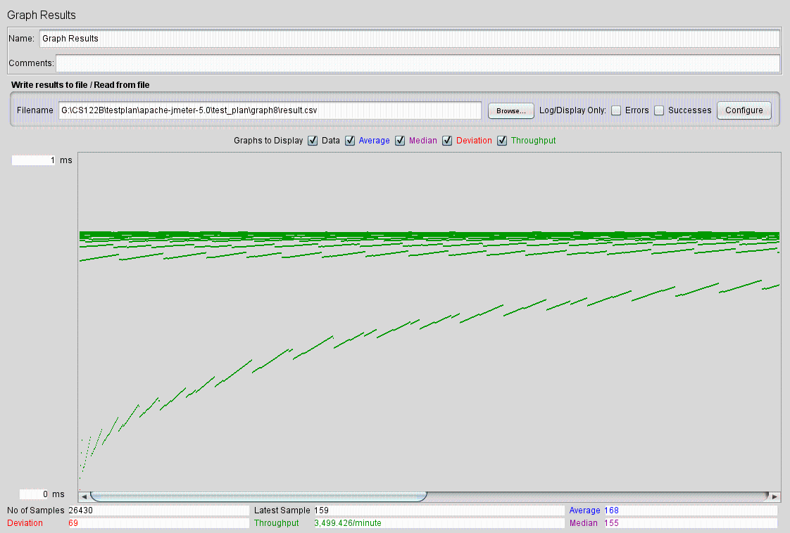
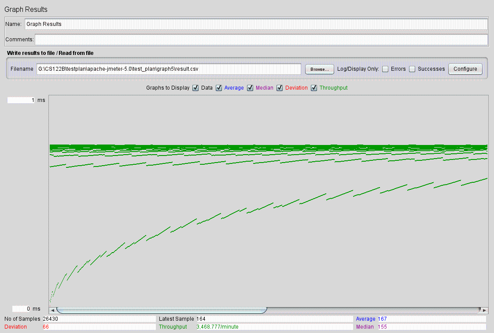

| Single-instance version cases | Graph Results Screenshot | Average Query Time(ms) | Average Search Servlet Time(ms) | Average JDBC Time(ms) | |
| Case 1: HTTP/1 thread |  | 25 | 2.34 | 0.12 | |
| Case 2: HTTP/10 threads |  | 29 | 4.92 | 0.95 | |
| Case 3: HTTP/10 threads/No prepared statements |  | 28 | 4.88 | 1.02 | -- |
| Case 4: HTTP/10 threads/No connection pooling |  | 243 | 209.88 | 198.43 | -- |
| Scaled version cases | Graph Results Screenshot | Average Query Time(ms) | Average Search Servlet Time(ms) | Average JDBC Time(ms) |
| Case 1: HTTP/1 thread |  | 169 | 2.01 | 0.16 |
| Case 2: HTTP/10 threads |  | 168 | 2.08 | 0.18 |
| Case 3: HTTP/10 threads/No prepared statements |  | 167 | 1.99 | 0.17 |
| Case 4: HTTP/10 threads/No connection pooling | 171 | 4.01 | 1.97 |